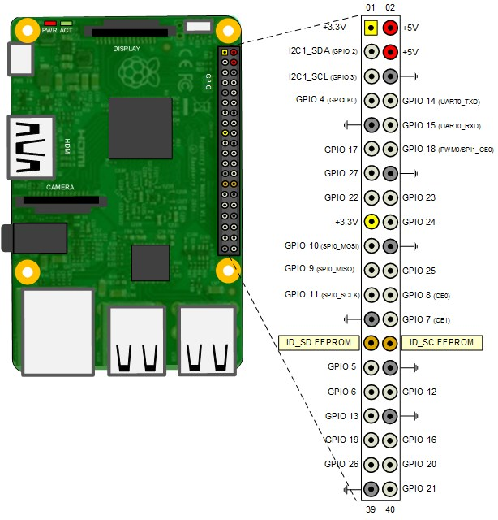

Communicating with an EEPROM
This example shows how to use Simulink® Support Package for Raspberry Pi Hardware to read from and write to an SPI EEPROM.
Contents
- Introduction
- Prerequisites
- Required Hardware
- Model
- Configure the SPI Interface on the Raspberry Pi Hardware
- Task 1 - Connect the EEPROM to the Raspberry Pi Hardware
- Task 2 - Configure the Model for Supported Raspberry Pi Hardware
- Task 3 - Configure the SPI properties of the Model
- Task 4 - Configure the Model to Write and Read Data using the SPI Blocks
- Task 5 - Run the Model in External Mode
- Other Things to Try
- Summary
Introduction
Simulink Support Package for Raspberry Pi Hardware enables you to use the SPI interface to communicate with SPI based devices. In this example, you will learn how to communicate with an EEPROM connected to the Raspberry Pi board via SPI. The example uses the 256kB "ON Semiconductor EEPROM CAT25256". This device uses a standard SPI protocol that is common to many other EEPROMs provided by different vendors. For more details about the device, refer to the CAT25256 datasheet.
Prerequisites
- We recommend completing Getting Started with Raspberry Pi® Hardware example and completing the Communicating with Raspberry Pi® Hardware example to learn about External mode.
- Refer to The Raspberry Pi SPI Interface to learn more about the SPI interface on Raspberry Pi.
Required Hardware
To run this example, you need the following hardware:
- Raspberry Pi board
- CAT25256 256kB SPI EEPROM Memory
- USB cable
- Breadboard wires
- A breadboard (recommended)
Model
The following figure shows the example model:
Configure the SPI Interface on the Raspberry Pi Hardware
The SPI interface is disabled by default in Raspberry Pi. To enable the SPI interface use the raspi-config utility that comes with the Raspbian Linux image. You can open an interactive shell to your Raspberry Pi board and execute the following command:
$ sudo raspi-config
To enable or disable the SPI interface, use up and down arrow keys to select the Advanced Options > SPI menu item which brings up a Yes or No question.
Go back to the main menu using left and right arrow keys and select Finish. If the raspi-config utility asks you to reboot, accept it. After your board reboots, the SPI interface is enabled on channels CE0 and CE1.
Task 1 - Connect the EEPROM to the Raspberry Pi Hardware
In this task, you connect the EEPROM to the Raspberry Pi board.
1. Refer to the following pin-out diagram of Raspberry Pi 3 Model B for connections.

Attach the EEPROM to the Raspberry Pi board using the following connections:
SPI EEPROM pin | Raspberry Pi pin
_ _ _ _ _ _ _ _ _ _ _ _ _ _ _ _ _ _ _ _ _
/CS (pin 1) | GPIO 8 (CE0)
SO (pin 2) | GPIO 9 (SPI0_MISO)
/WP (pin 3) | 5 V
VSS (pin 4) | GND
SI (pin 5) | GPIO 10 (SPI0_MOSI)
SCK (pin 6) | GPIO 11 (SPI0_SCLK)
/HOLD (pin 7) | 5 V
VCC (pin 8) | 5 V
_ _ _ _ _ _ _ _ _ _ _ _ _ _ _ _ _ _ _ _ _You can also connect /CS pin of EEPROM to GPIO 7 (CE1) of Raspberry Pi. This example shows Raspberry Pi 3 Model B connected to EEPROM. However, you can connect any Raspberry Pi board supported by Simulink Support Package for Raspberry Pi Hardware. Use showPins method of the raspi object to check the pin-out diagram of your Raspberry Pi board.
Task 2 - Configure the Model for Supported Raspberry Pi Hardware
In this task, you configure the model for Raspberry Pi hardware.
1. Open the Communicating with an SPI based EEPROM using Raspberry Pi Hardware model.
2. In your Simulink model, click Simulation > Model Configuration Parameters to open Configuration Parameters dialog.
3. Select the Hardware Implementation pane and select Raspberry Pi from the Hardware board parameter list. Do not change any other settings.
4. Click Apply.
Task 3 - Configure the SPI properties of the Model
In this task, you configure the SPI properties of the model according to the SPI settings supported by the EEPROM.
1. Click Target Hardware Resources > SPI.
2. Set the SPI0 CE0 BusSpeed(kHz) parameter in the SPI group to one of the values in dropdown, say, 8000. As per the CAT25256 datasheet, the EEPROM supports a maximum SPI clock frequency of 20 MHz.
3. Click OK.
Task 4 - Configure the Model to Write and Read Data using the SPI Blocks
In this task, you have to configure the model to read data from the EEPROM using the SPI WriteRead, SPI Register Write, and SPI Register Read blocks. You will run the model in External mode to view the data read from the EEPROM.
1. Open the Communicating with an SPI based EEPROM using Raspberry Pi Hardware model.
2. Notice the following subsystems in the model:
The One_time_initialization subsystem enables the EEPROM and writes data to it.
The Execution_loop subsystem reads data from the EEPROM.
- The One_time_initialization subsystem runs at model initialization while the Execution_loop subsystem runs every sample hit. This selective execution of subsystems is handled using the Unit Delay and the Enabled Subsystem blocks from the Simulink library.
- The EEPROM uses the following opcodes for enable, write, and read operations as per the CAT25256 datasheet:
Command | Opcode | Operation
_ _ _ _ _ _ _ _ _ _ _ _ _ _ _ _ _ _ _ _ _ _ _ _
WREN | 6 | Enable Write Operations
WRITE | 2 | Write Data to Memory
READ | 3 | Read Data from Memory
_ _ _ _ _ _ _ _ _ _ _ _ _ _ _ _ _ _ _ _ _ _ _ _3. Open the One_time_initialization subsystem and note the following:
- The Slave select pin parameter of the SPI WriteRead block is set to SPI0_CE0.
- Before writing to the EEPROM memory, you need to enable the write operations on the device. The Write Enable constant block outputs WREN command (numeric value 6) to the EEPROM.
- After the WRITE command is sent, the 16-bit EEPROM memory location followed by the data bytes are sent to the EEPROM.
The Register address parameter in the SPI Register Write block contains [2 0 10] which sends the WRITE command followed by the 16-bit memory location 10 (0x000A) on the EEPROM. The Data to Write constant block with the value of [101 -19 35 -87 4] writes 5 int8 values to the EEPROM.
- The delay subsystems provide the delay required for the successful completion of the Write Enable before sending data values.
- The priority of the delay subsystem (corresponding to the WREN command) is set to 1. The priority of the SPI Register Write block (corresponding to the WRITE command) is set to any value higher than 1. This ensures that the EEPROM is write enabled before sending the data bytes to be written.
To set the Priority of a block, right click on the block > Properties > General > Priority. To know more about block priorities and their impact on block execution order, refer to Set Block Properties.
4. Open the Execution_loop subsystem and observe the following:
- After the READ command, the 16-bit EEPROM memory location is sent.
The Register address parameter in the SPI Register Read block with the value of [3 0 10] sends the READ command followed by the 16-bit memory location 10 on the EEPROM. The Output data type parameter is set to int8 and Output data length parameter is set to 5 corresponding to the data type and number of values written to the EEPROM.
5. The EEPROM latches the input data on the rising edge of the SCK clock and shifts out data on the falling edge of the SCK clock. This behavior corresponds to SPI mode 0 (Clock Polarity 0, Clock Phase 0) of the Raspberry Pi. Notice the Mode (Clock polarity and phase) parameter on SPI WriteRead, SPI Register Write, and SPI Register Read blocks are set to 0.
Task 5 - Run the Model in External Mode
In this task, you will run the model in External mode to monitor the data read from the EEPROM.
1. Change the Simulation mode on the toolbar of the model to External.
2. Click the Run button on the toolbar of the model to run it in External mode.
3. In the Execution_loop subsystem, monitor the Display block to observe the data read from the EEPROM.
4. Click the Stop button in the Simulink model to end the External mode execution.
Other Things to Try
- Change the SPI clock frequency to a different value supported by the EEPROM.
- Follow the steps in this example to communicate to other SPI devices.
Summary
This example showed how to program your Raspberry Pi board to write to and read from an SPI based EEPROM. In this example you learned how to:
- Communicate with an SPI device.
- Initialize an EEPROM for a write operation.
- Program the Raspberry Pi board to write and read multiple bytes of data from the SPI EEPROM.
You can use this example as a reference to access other SPI devices.